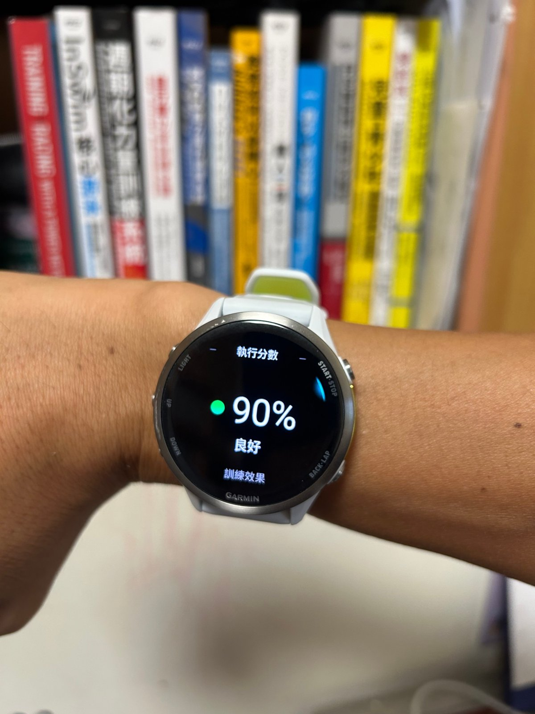

跑完課表，手錶現在可以幫你打分數了

換上 Forerunner 970 之後，每次照著排好的課表跑完，錶面都會先跳出一個百分比，叫做「執行分數」（Workout Execution Score）。照片裡是一份 48 分鐘的漸速跑課表，練完按下儲存，就跳出 90%，綠燈，代表這份課表的完成度很高。
這個數字回答的是：今天這份課表，你照著做到了幾成？
我之前用的 945 沒有這個數字。跑完間歇，只能自己回去翻每一趟的配速，才知道哪幾趟跑太快、哪幾趟掉了速。現在錶直接給一個分數，整份課表執行得如何，一眼就知道；想看細節，再去翻每一趟的數據。我很喜歡這個設計。
這個分數怎麼算？我翻了 Garmin 官方手冊，規則整理如下：
❶ 要有目標的結構化課表才會計分：目標可以是心率、配速、速度或功率，沒有設定目標的自由跑不會有分數。
❷ 手錶上只有跑步和騎車的課表會計分，游泳與肌力課表不會。
❸ 主課表段落的權重最高，主要看兩件事：你的強度有多貼近該段的目標，以及每一段有沒有完成。我有一次練間歇，因為有事少跑了兩趟就提早結束，儲存後就沒有出現分數。
❹ 熱身與恢復段也會算，但影響比較小。
❺ 收操段完全不列入計分。
分數分成三個顏色：綠色 67～100% 是良好，黃色 34～66% 是普通，紅色 0～33% 是偏低。
官方手冊裡有一個例子：一份 60 分鐘、設定配速區間的課表，你在區間內待了 50 分鐘，分數就是 83%。50 除以 60 約為 83%，所以可以把它理解成「主課表待在目標區間內的時間比例」，再加上段落有沒有跑完。Garmin 並沒有公開完整公式，各段的實際權重我目前還沒查到，有看到相關資訊的朋友，歡迎分享給我。
從這幾條規則，可以整理出幾件吃課表的人需要知道的事：
▹ 跑太快一樣會扣分：間歇課表把配速拉到區間上緣之外，也算是沒落在目標內。分數高的關鍵在於跑在指定的強度，衝得比較快並不會加分。
▹ 少跑幾趟就提早結束課表，可能連分數都不會出現。
▹ 收操不計分，熱身影響也小，所以分數高低幾乎取決於主課表。
▹ 課表的區間設得太窄（例如配速上下只差幾秒），GPS 的小誤差就可能把分數拉低。國外論壇上也有跑者回報，覺得自己有照目標跑，分數卻偏低。遇到這種情況，可以先確認這份課表的區間是不是很窄，如果配速區間只有 2 秒或心率區間只有 2 bpm，本來就很難執行。我自己是不太會開這種課表的。
哪些錶有這個功能？這項功能最早出現在 Garmin 的 Edge 自行車碼表上，二〇二二年隨著 Forerunner 255 與 955 第一次放進跑錶。目前在官方手冊裡查得到這項功能的機種有：
▹ Forerunner：255、265、570、955、965、970
▹ fēnix：fēnix 7 系列、fēnix 8 系列，以及 Enduro 3
▹ Edge 碼表：Edge 540、550、850、Edge MTB 等
Forerunner 165、Venu、vivoactive 這些入門與生活型錶款，我在手冊裡沒有找到這項功能，不過我沒用過這幾款錶，無法確定是否完全沒有。
我覺得這個數字對吃課表的人特別有幫助，是因為課表的效果，一半在設計，一半在執行。
教練排的強度、組數、恢復時間，都是為了刺激某一個特定的系統或能力；跑快了、少跑一趟，教練要的效果就會打折。手錶把執行程度直接算成分數，一練完馬上看得到，我覺得很棒，也確實有助於提升跑者照表操課的動機。
但我也想提醒一下：「執行分數」衡量的只是「照表操課的程度」，它不代表體能好壞，也不代表今天的訓練效果。身體狀況不好時，主動把配速降下來，分數低一點也無妨；有時刻意放棄或減量執行課表，反而是聰明的決定。
分數反映的是這次訓練和課表之間的距離。距離近一點，訓練就更接近當初設計它的目的。但數字終究是數字，還是要聽身體的話，該果斷減量或休息的時候，就別再追數字了。
執行分數這個數字，是留給狀況好的自己去追求的。